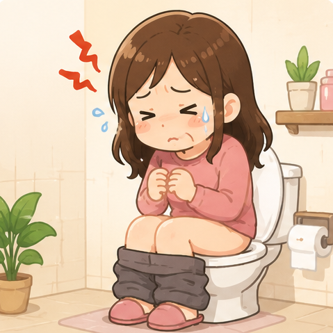
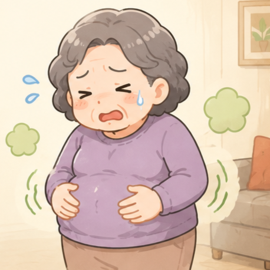
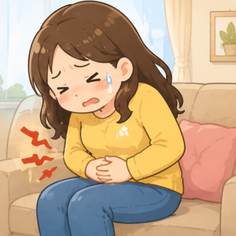

腸道是第二個大腦，關鍵時刻就靠「好菌應援」
找到真正適合你的活菌，讓腸道重新做主！
現代人常見的 6 大腸道警訊，你中了幾個？



好的益生菌，達到才能真正幫助健康！挑選時注意 8 大條件：
活菌入口到發揮效用，4 個關鍵旅程
你最常問的問題，我們一次解答
來自各年齡層的親身體驗，讓數據說話
「吃了兩週感覺肚子比較不脹了，早上起來也比較順，推薦給家人一起吃。」
「過敏鼻炎改善很多，以前每天早起都在噴嚏，現在好多了，沒想到腸道這麼重要。」
「小孩從幼稚園就開始吃，感覺抵抗力比班上同學好，冬天比較少跑診所。」
「代謝變快了，配合飲食控制，兩個月輕了 3 公斤，精神也比較好。」
「之前長期吃抗生素後腸胃很差，吃這個一個月後整個調回來了，強烈推薦！」
「吃了兩週感覺肚子比較不脹了，早上起來也比較順，推薦給家人一起吃。」
「過敏鼻炎改善很多，以前每天早起都在噴嚏，現在好多了，沒想到腸道這麼重要。」
「小孩從幼稚園就開始吃，感覺抵抗力比班上同學好，冬天比較少跑診所。」
「代謝變快了，配合飲食控制，兩個月輕了 3 公斤，精神也比較好。」
「之前長期吃抗生素後腸胃很差，吃這個一個月後整個調回來了，強烈推薦！」
益生菌保養，就找 健康力益生菌
依照你的需求與生活習慣，選擇最適合的配方
| 比較項目 | 益暢敏益生菌 | PROTE 200 膠囊 |
|---|---|---|
| 📦 產品劑型 | 粉末包裝 | 膠囊 |
| 🎯 主要功效 | 腸胃調節・過敏改善 | 免疫調節・過敏體質 |
| 🦠 菌株來源 | 100% 人體分離 ABRP | 50 億/顆 本土專利 |
| 🏥 臨床實證 | ✔ 7 天有效 | ✔ 醫學中心認證 |
| 👶 適用對象 | 全年齡（含兒童） | 全年齡 |
| 🥣 使用方式 | 溶於水・好入口 | 直接吞服 |
| ✈️ 攜帶便利 | ✔ 分包設計 | ✔ 瓶裝輕巧 |